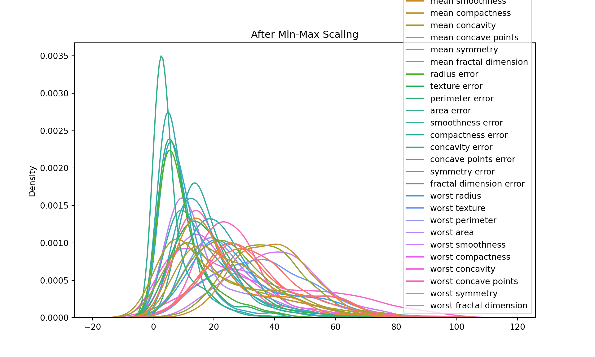
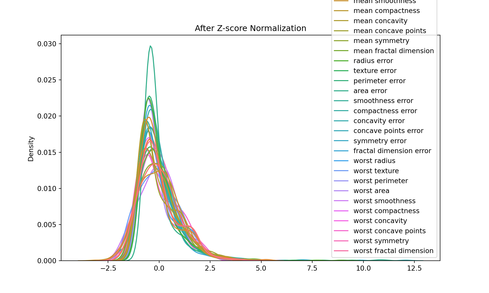
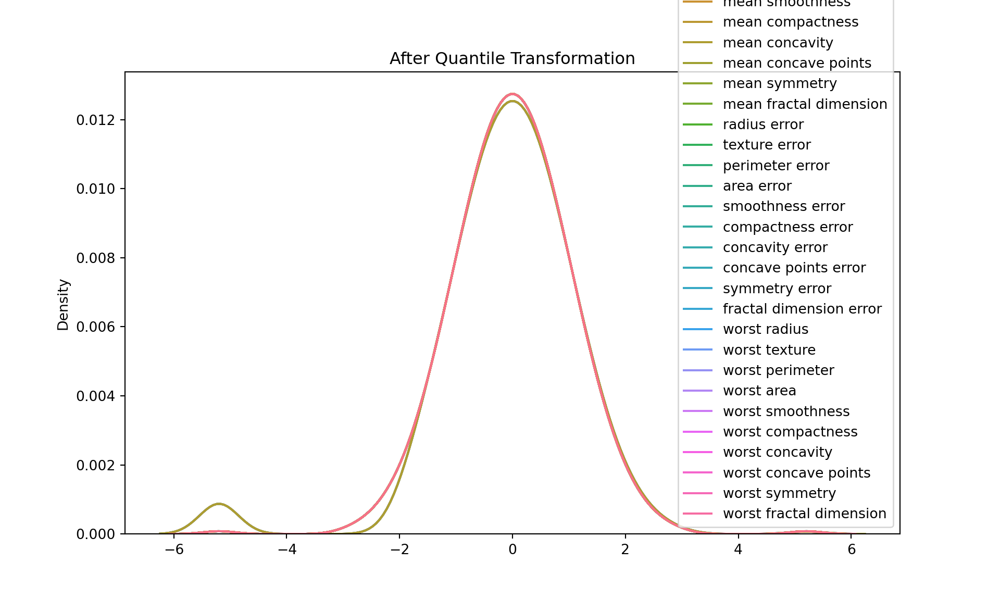

library(reticulate)
# one-off setup (if you haven't done it yet)
# install_miniconda()
##conda_create(
## envname = "hds-python",
## python_version = "3.11",
## packages = c("numpy", "pandas", "matplotlib", "seaborn", "scikit-learn")
##)
use_condaenv("hds-python", required = TRUE)
#py_config()
#conda_install("hds-python", c("jupyter", "plotly"))Data Transformation - Python
Welcome to the “Data Transformation” practical session.
We are using both Pandas (data loading, processing, transformation and manipulation) and Scikit-learn (example data source, ML and statistical analysis)
Data Scaling and Normalization
- Different Types of Normalization.
Data Set Used :
Breast Cancer Wisconsin (Diagnostic) Data Set
Features are computed from a digitized image of a fine needle aspirate (FNA) of a breast mass. They describe characteristics of the cell nuclei present in the image. n the 3-dimensional space is that described in: [K. P. Bennett and O. L. Mangasarian: “Robust Linear Programming Discrimination of Two Linearly Inseparable Sets”, Optimization Methods and Software 1, 1992, 23-34].
# Import necessary libraries
import pandas as pd
import numpy as np
from sklearn import preprocessing
from scipy import stats
import seaborn as sns
from sklearn import datasets
import matplotlib.pyplot as plt# Load the dataset
data = datasets.load_breast_cancer()
df = pd.DataFrame(data.data, columns=data.feature_names)# Let's look at the first few rows of the dataframe
print(df.head()) mean radius mean texture ... worst symmetry worst fractal dimension
0 17.99 10.38 ... 0.4601 0.11890
1 20.57 17.77 ... 0.2750 0.08902
2 19.69 21.25 ... 0.3613 0.08758
3 11.42 20.38 ... 0.6638 0.17300
4 20.29 14.34 ... 0.2364 0.07678
[5 rows x 30 columns]# Let's plot the data before transformation
plt.figure(figsize=(10, 6))
sns.kdeplot(data=df)
plt.title("Non-normalised data")
plt.show()
Strategy 1 : Min-Max scaling
Min-Max scaling: This transformation scales and translates each feature individually such that it is in the range [0, 1]. The transformed data is stored in df_minmax.
#### Strategy 1 : Min-Max scaling
scaler = preprocessing.MinMaxScaler(feature_range=(0,100))
df_minmax = pd.DataFrame(scaler.fit_transform(df), columns=data.feature_names)
#print("\nAfter Min-Max Scaling:\n", df_minmax.head())
# Let's plot the data after min-max scaling
plt.figure(figsize=(10, 6))
sns.kdeplot(data=df_minmax)
plt.title("After Min-Max Scaling")
plt.show()
Log transformation:
This transformation applies the natural logarithm to each value in the DataFrame. This is often used when the data is highly skewed, as it can help to make the data more “normal” (i.e., more closely approximate a normal distribution). The transformed data is stored in df_log.
# Log Transformation
df_log = df.apply(np.log)
df_log = df_log.replace([np.inf, -np.inf], np.nan)
df_log = df_log.dropna()
print("\nAfter Log Transformation:\n", df_log.head())
After Log Transformation:
mean radius mean texture ... worst symmetry worst fractal dimension
0 2.889816 2.339881 ... -0.776311 -2.129472
1 3.023834 2.877512 ... -1.290984 -2.418894
2 2.980111 3.056357 ... -1.018047 -2.435203
3 2.435366 3.014554 ... -0.409774 -1.754464
4 3.010128 2.663053 ... -1.442230 -2.566811
[5 rows x 30 columns]# Let's plot the data after min-max scaling
plt.figure(figsize=(10, 6))
sns.kdeplot(data=df_log)
plt.title("After Log Transformation")
plt.show()
Z-score normalization:
Also known as standardization, this transformation scales and translates each feature so that it has a mean of 0 and a standard deviation of 1. The transformed data is stored in df_zscore.
Z-score normalization is a type of data standardization where we convert all features in our dataset to have a mean (µ) of 0 and a standard deviation (σ) of 1. The purpose of this transformation is to remove the scale effect of measurements.
The formula for Z-score normalization is:
Z = (X - µ) / σ
where:
Z is the standardized (Z-score normalized) value, X is the original value, µ is the mean of the feature, σ is the standard deviation of the feature. Why do we do this? In machine learning, many algorithms (like K-nearest neighbors, Neural Networks, and others) perform better when their input features are roughly on the same scale and centered around zero. If one feature has a range of -1 to 1, while another feature has a range of -1000 to 1000, the second feature will completely dominate when these features are combined, even though the first feature might be just as important.
After Z-score normalization, every feature in the dataset will have a mean of 0 and a standard deviation of 1, putting them all on roughly the same scale. The data values in each column now represent how many standard deviations the original value was from the mean of that column. This makes it easier to compare different features, and helps many machine learning algorithms perform better.
# Z-score normalization
scaler = preprocessing.StandardScaler()
df_zscore = pd.DataFrame(scaler.fit_transform(df), columns=data.feature_names)
print("\nAfter Z-score Normalization:\n", df_zscore.head())
After Z-score Normalization:
mean radius mean texture ... worst symmetry worst fractal dimension
0 1.097064 -2.073335 ... 2.750622 1.937015
1 1.829821 -0.353632 ... -0.243890 0.281190
2 1.579888 0.456187 ... 1.152255 0.201391
3 -0.768909 0.253732 ... 6.046041 4.935010
4 1.750297 -1.151816 ... -0.868353 -0.397100
[5 rows x 30 columns]# Let's plot the data after Z-score normalization
plt.figure(figsize=(10, 6))
sns.kdeplot(data=df_zscore)
plt.title("After Z-score Normalization")
plt.show()
Power transformation (Cube):
This transformation raises each value in the DataFrame to the power of 3. It can be used to increase the skewness in the data.
# Power transformation (cube)
df_power = df.apply(lambda x: x**3)
print("\nAfter Power Transformation:\n", df_power.head())
After Power Transformation:
mean radius mean texture ... worst symmetry worst fractal dimension
0 5822.285399 1118.386872 ... 0.097399 0.001681
1 8703.679193 5611.284433 ... 0.020797 0.000705
2 7633.736209 9595.703125 ... 0.047163 0.000672
3 1489.355288 8464.718872 ... 0.292490 0.005178
4 8353.070389 2948.814504 ... 0.013211 0.000453
[5 rows x 30 columns]# Let's plot the data after power transformation
plt.figure(figsize=(10, 6))
sns.kdeplot(data=df_power)
plt.title("After Power Transformation")
plt.show()
Quantile transformation:
Quantile transformation, also known as quantile normalization, is a technique for making two distributions identical in statistical properties. To achieve this, it maps the values from the input distribution to a desired output distribution, such as a uniform or a normal distribution.
The process can be summarized as follows:
For each feature, sort the values in ascending order.
The smallest value is replaced with the smallest value from the desired distribution, the second smallest with the second smallest, and so on.
This way, the transformed data will have the same distribution as the desired output distribution, while preserving the rank of the original data.
One of the main uses of quantile transformation is to reduce the impact of outliers. Because it’s based on the rank of the data, not the actual values, extreme values will be closer to the rest of the data after transformation.
Another use is to make non-linear data more suitable for linear models. If a feature has a distribution that’s skewed or has a heavy tail, quantile transformation can help make it more “normal”, so that linear models can make better predictions.
# Quantile transformation
scaler = preprocessing.QuantileTransformer(output_distribution='normal')
df_quantile = pd.DataFrame(scaler.fit_transform(df), columns=data.feature_names)/Users/l.bravo@bham.ac.uk/Library/r-miniconda-arm64/envs/hds-python/lib/python3.11/site-packages/sklearn/preprocessing/_data.py:2846: UserWarning: n_quantiles (1000) is greater than the total number of samples (569). n_quantiles is set to n_samples.
warnings.warn(print("\nAfter Quantile Transformation:\n", df_quantile.head())
After Quantile Transformation:
mean radius mean texture ... worst symmetry worst fractal dimension
0 0.982803 -2.918152 ... 1.966025 1.618134
1 1.634697 -0.277117 ... -0.137235 0.526427
2 1.352998 0.513796 ... 1.304975 0.451806
3 -0.820429 0.356013 ... 5.199338 2.918152
4 1.512992 -1.221674 ... -1.004493 -0.263385
[5 rows x 30 columns]# Let's plot the data after quantile transformation
plt.figure(figsize=(10, 6))
sns.kdeplot(data=df_quantile)
plt.title("After Quantile Transformation")
plt.show()
Your Task
Question 1:
1.1 Load the Bupa Data set and apply Quantile Normalization on each feature.
1.2 Remove the Label column ("selector") from the data set.
1.3 Visualize the data before and after normalization using boxplot. You can download the dataset through the link:
#df_bupa = pd.read_csv('bupa.csv')
#df_bupa = df_bupa.dropna()
#print(df_bupa)
#print("\Before Quantile Transformation:\n")
# Let's plot the data after quantile transformation
#plt.figure(figsize=(10, 6))
#sns.boxplot(data=df_bupa)
#plt.title("After Quantile Transformation")
#plt.show()
## ------------------- Complete This ------------------------- ##
## scaler = preprocessing. ...
## df_bupa_quantile = pd.DataFrame(scaler.fit_transform( ... ), columns = ... )
#print("\nAfter Quantile Transformation:\n")
## Let's plot the data after quantile transformation
#plt.figure(figsize=(10, 6))
#sns.boxplot(data=df_bupa_quantile)
#plt.title("After Quantile Transformation")
#plt.show()